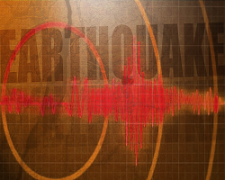

Soda Springs Idaho

Weather Summary
Currently:
Temperature: °F
Wind Chill: °F
Humidity: %
Wind Speed: mph
Five-Day Weather Forecast
4.2 magnitude earthquake southeast of Soda Springs
SODA SPRINGS, IDAHO – A 4.2 magnitude earthquake struck just southeast of Soda Springs at around 10:35 p.m. on Saturday night. According to the University of Utah, the earthquake’s epicenter was located 5 kilometers below U.S. Highway 30, in the area between Soda Springs and Georgetown, near the Caribou County/Bear Lake County line. People across Southeast Idaho reported feeling the earthquake and there were numerous reports of the quake on social media posts. No injuries or damage to structures have been reported in relation to the earthquake....continue reading

Contact Us
⚲ 5, Downtown Preston, Id
📧askus@everythingpreston.org
📞 123-555-6789